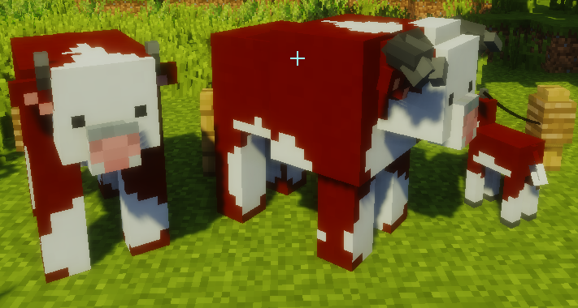
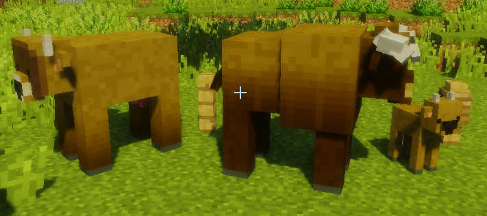
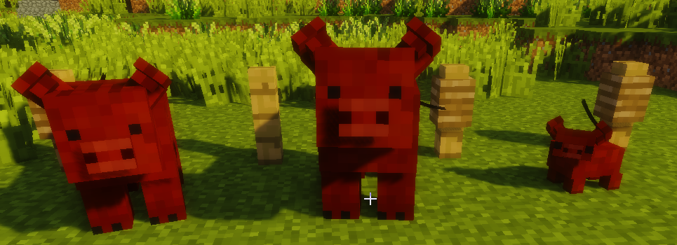
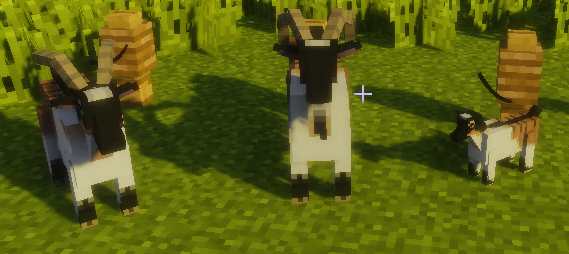
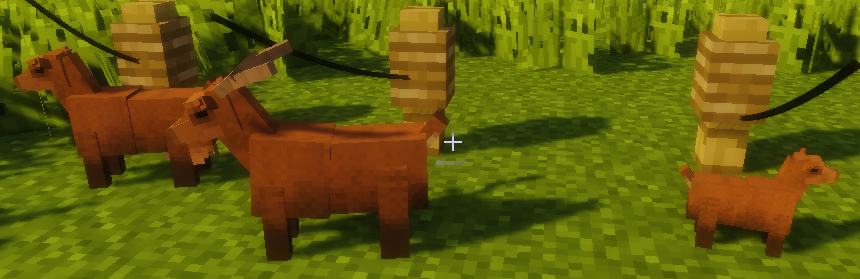
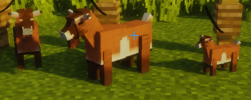

카테고리 제작 목적 : 마인크래프트가 유투브 컨텐츠 제작 및 새로운 세계관과 관계 모델링을 보여주는 툴로 활용되는 시작점인 지금 창작자 여성들이 다양한 마인크래프트 모드를 쉽게 접하고 활용할 수 있도록 한글로 정보를 제공하여 전체적인 접근도 향상에 기여하는데 그 목적이 있다. 개개의 모드를 상세히 설명하는 하위 문서를 먼저 만든 후 마인크래프트 전체 모드문서를 생성할 예정.
1. 개요
마인크래프트 모더 purplicious_cow와 RazzleberryFox가 만든 동물 추가 모드. 현 버전 1.12.2까지 지원된다. 야생동물 몇종을 추가해주고 기본 가축의 스킨을 변경하며, 품종이 최대 8가지로 늘어나고 암수에 따라 외형과 크기가 변경된다. 먹이와 물을 먹으면 스스로 번식을 하고 포유류의 경우 새끼가 있는 동안에 젖을 짤 수 있다. 짜낸 젖으로는 전통 방식으로 치즈를 만들 수 있고, 조류의 경우 둥지에 알을 낳는 등 보다 현실적인 축산을 경험할 수 있는 모드.
2. 내용
2.1 동물 (길들일 수 있는)
어떤 가축들은 여물통에 각각 물과 먹이를 담아주어 허기와 갈증이 해소된 상태에서만 번식을 하고 새끼를 낳는다. 암소/암염소는 새끼를 낳은 상태에서만 젖이 나오고 닭은 둥지가 있어야 알을 낳는다.
2.1.1 짐수레 말
4색의 짐수레 말. 수컷은 몸집이 좀 더 크다. 말을 도축하면 익히지 않은 말고기를 얻을 수 있다. 밀로 길들이고 황금당근으로 번식시킬 수 있으며, 짐수레 말은 차양이 없는 짐수레, 차양이 있는 짐수레, 쟁기를 끌 수 있다. 소금 블럭을 설치해 주면 체력이 회복된다.
| 차양이 없는 말 수레 | 차양이 있는 짐수레 | 쟁기 |
차양이 없는 짐수레에는 상자를 싣거나(열지는 못함) 사람을 태울 수 있고, 차양이 있는 짐수레 마부칸에는 사람이 탈 수 있다. 쟁기로 말이 지나가는 땅을 갈게 할 수 있으며, 채찍을 사용하면 말을 빨리 뛰게 할 수 있다.
2.1.2 소

앵거스 (암소, 숫소, 송아지)
프리지아 (암소, 숫소, 송아지)

해리퍼드 (암소, 숫소, 송아지)
홀스타인 (암소, 숫소, 송아지)
롱혼 (암소, 숫소, 송아지)
하이랜드 (암소, 숫소, 송아지)

저지 (암소, 숫소, 송아지)
버섯소 (암소, 숫소, 송아지)
밀로 길들일 수 있으며 소를 도축하면 가죽과 익히지 않은 소고기, 혹은 익히지 않은 최상품 소고기를 얻을 수 있다. 식칼과 익히지 않은 최상품 소고기를 조합하면 익히지 않은 최상품 스테이크를 얻을 수 있다.
우유는 저지, 홀스타인, 프리지아 세 종의 소에서만 짤 수 있고 다른 소는 육우종으로 구분한다. 암소는 새끼를 낳은 상태에서만 젖이 나오는 것을 유의하여야 한다. 소는 여물통에 각각 물과 먹이를 담아주어 허기와 갈증이 해소된 상태에서만 번식을 하고 새끼를 낳는다. 소금 블럭을 설치해 주면 체력이 회복된다.
암소에서 짠 우유는 치즈 틀에 넣어 치즈로 발효시킬 수 있다. 우유를 치즈 틀에 넣고 기다리면 되는데, 이렇게 얻은 치즈 휠은 식칼과 조합하여 즉시치유 3의 효과가 있는 치즈 웨지로 만들 수 있다.
2.1.3 돼지
아메리칸 요크셔 (암컷, 수컷, 새끼)
올드 스팟 (암컷, 수컷, 새끼)
라지 블랙 (암컷, 수컷, 새끼)
라지 화이트(암컷, 수컷, 새끼)
햄프셔 (암컷, 수컷, 새끼)

두록 (암컷, 수컷, 새끼)
사탕무, 당근, 감자로 길들일 수 있다. 돼지를 도축하면 익히지 않은 돼지고기, 혹은 익히지 않은 최상품 돼지고기를 얻을 수 있다. 식칼과 익히지 않은 최상품 돼지고기를 조합하면 익히지 않은 최상품 베이컨을 얻을 수 있다. 숲에서 길들인 돼지로 송로버섯을 찾을 수 있다. 길들인 돼지를 따라가라!
돼지는 여물통에 각각 물과 먹이를 담아주어 허기와 갈증이 해소된 상태에서만 번식을 하고 새끼를 낳는다. 돼지는 흙과 물양동이를 조합해 얻을 수 있는 진흙 블럭에 몸을 비비는 것을 좋아한다. 소금 블럭을 설치해 주면 체력이 회복된다.
2.1.4 닭
레그혼 (암탉, 수탉, 병아리)
오핑턴 닭 (암탉, 수탉, 병아리)
플리머스 록 (암탉, 수탉, 병아리)
로드 아일랜드 붉은 닭 (암컷, 수컷, 병아리)
와이언 도트 (암컷, 수컷, 병아리)
각종 씨앗으로 길들일 수 있다. 닭을 도축하면 깃털과 익히지 않은 최상품 닭고기를 얻을 수 있다. 닭은 둥지에 알을 낳는데, 닭은 여물통에 각각 물과 먹이를 담아주어 허기와 갈증이 해소된 상태에서만 번식을 하고 새끼를 낳는다.
닭이 낳은 알을 구우면 오믈렛을 만들 수 있다.
2.1.5 양
프리지아 (암컷 3색, 수컷 3색 중 흰색)
서퍽 (암컷 2색, 수컷2색)
도퍼 (암컷, 수컷, 새끼)
도싯 (암컷 2색, 수컷 2색)
메리노 (암컷 2색, 수컷 2색)
제이콥 (암컷, 수컷, 새끼)
제이콥 양은 얼룩무늬 양털(제이콥 양털)을 얻을 수 있지만 염색약으로 털을 염색할 수는 없다.
사탕무, 당근, 밀로 길들일 수 있다. 양을 도축하면 양털, 익히지 않은 양고기, 혹은 익히지 않은 최상품 양고기를 얻을 수 있다. 양에게서는 양 우유를 짤 수 있으며, 암양은 새끼를 낳은 상태에서만 젖이 나오는 것을 유의하여야 한다. 양은 여물통에 각각 물과 먹이를 담아주어 허기와 갈증이 해소된 상태에서만 번식을 하고 새끼를 낳는다. 소금 블럭을 설치해 주면 체력이 회복된다.
암양에서 짠 우유는 치즈 틀에 넣어 치즈로 발효시킬 수 있다. 우유를 치즈 틀에 넣고 기다리면 되는데, 이렇게 얻은 치즈 휠은 식칼과 조합하여 즉시치유 1의 효과가 있는 치즈 웨지로 만들 수 있다.
2.1.6 염소

알파인 (암컷, 수컷, 새끼)
앙고라 (암컷, 수컷, 새끼)
페인팅 (암컷, 수컷, 새끼)

키코 (암컷, 수컷, 새끼)

카인더 (암컷, 수컷, 새끼)
나이지리안 드워프 (암컷, 수컷, 새끼)
피그미 (암컷, 수컷, 새끼)
사과, 사탕무, 당근, 밀로 길들일 수 있다. 염소를 도축하면 익히지 않은 염소고기, 혹은 익히지 않은 최상품 염소고기를 얻을 수 있다. 염소에게서는 우유를 짤 수 있으며, 암염소는 새끼를 낳은 상태에서만 젖이 나오는 것을 유의하여야 한다. 염소는 여물통에 각각 물과 먹이를 담아주어 허기와 갈증이 해소된 상태에서만 번식을 하고 새끼를 낳는다. 소금 블럭을 설치해 주면 체력이 회복된다.
암염소에서 짠 우유는 치즈 틀에 넣어 치즈로 발효시킬 수 있다. 우유를 치즈 틀에 넣고 기다리면 되는데, 이렇게 얻은 치즈 휠은 식칼과 조합하여 저항 1의 효과가 있는 치즈 웨지로 만들 수 있다.
2.1.7 토끼
코튼테일 (암컷, 수컷, 새끼)
친칠라 (암컷, 수컷, 새끼)
더치 (암컷, 수컷, 새끼)
하바나 (암컷, 수컷, 새끼)
잭 (암컷, 수컷, 새끼)
뉴질랜드 (암컷, 수컷, 새끼)
렉스 (암컷, 수컷, 새끼)
롭 (암컷 4색 중 2색, 수컷 4색 중 2색)
당근으로 길들일 수 있다. 토끼를 도축하면 토끼가죽, 토끼발, 익히지 않은 토끼고기를 얻을 수 있다.
토끼는 여물통에 각각 물과 먹이를 담아주어 허기와 갈증이 해소된 상태에서만 번식을 하고 새끼를 낳는다.
2.1.8 공작새
암회색 공작 (암컷, 수컷, 새끼)
오팔 공작 (암컷, 수컷, 새끼)
복숭아색 공작 (암컷, 수컷, 새끼)
보라색 공작(암컷, 수컷, 새끼)
회갈색 공작(암컷, 수컷, 새끼)
파란 공작(암컷, 수컷, 새끼)
하얀 공작(암컷, 수컷, 새끼)
씨앗으로 길들일 수 있다. 공작을 도축하면 공작깃털(수컷만) 과 익히지 않은 공작고기, 혹은 익히지 않은 최상품 공작고기를 얻을 수 있다. 공작은 둥지에 알을 낳는데, 공작새는 여물통에 각각 물과 먹이를 담아주어 허기와 갈증이 해소된 상태에서만 번식을 하고 새끼를 낳는다. 두꺼비와 개구리를 잡아먹는다.
공작이 낳은 알을 구우면 오믈렛을 만들 수 있다.
2.1.9 햄스터
7색 햄스터. 씨앗으로 만든 햄스터 사료로 길들일 수 있다. 길들인 햄스터는 앵무새처럼 어깨 위에 태우거나1 햄스터볼 속에 넣거나 쳇바퀴 속에 넣을 수 있다. 허기가 다 떨어지면 햄스터는 쳇바퀴에서 빠져나온다.
| 햄스터볼 | 쳇바퀴 |
2.1.10 고슴도치
고슴도치와 알비노 고슴도치. 사과, 당근, 사탕무, 알, 익지 않은 닭고기나 익지 않은 토끼고기로 길들일 수 있다. 병아리, 닭, 개구리 따위의 소동물을 공격한다. 둥지에서 알을 훔쳐먹는다. 길들인 고슴도치는 앵무새처럼 어깨 위에 태울 수 있다.
2.1.11 페렛
흰 페렛과 회색 페렛. 알로 길들일 수 있다. 병아리, 닭, 개구리 따위의 소동물을 공격한다. 둥지에서 알을 훔쳐먹는다. 길들인 페렛은 앵무새처럼 어깨 위에 태울 수 있다.
2.2 동물 (길들일 수 없는)
2.2.1 개구리/두꺼비/독화살 개구리
| 개구리 | 두꺼비 | 독화살 개구리 |
개구리와 두꺼비를 사냥하면 익히지 않은 개구리 다리를 얻을 수 있다.